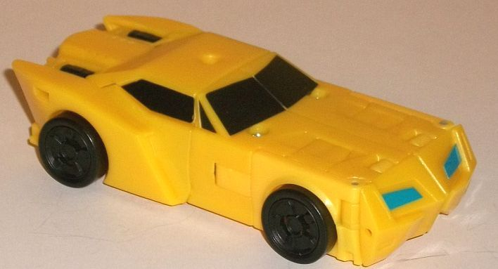 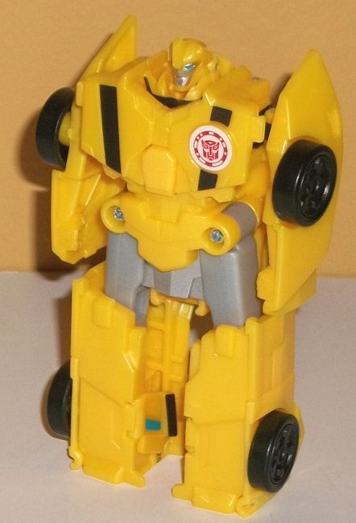
Difficulty of Transformation: Very Easy
Color Scheme : Milky moderately dull yellow and some light milky gray, silver, black, moderately light blue, and forest green
Individual Rating : 4.2
Allegiances
: Autobot
Size
: Combiner Set
Overall Rating
: 4.1
 Bumblebee
Bumblebee
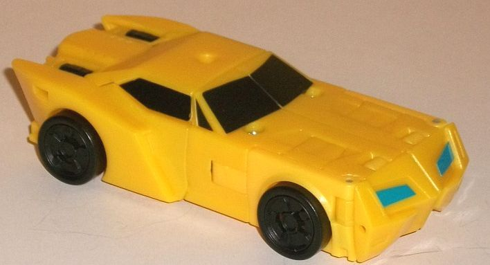
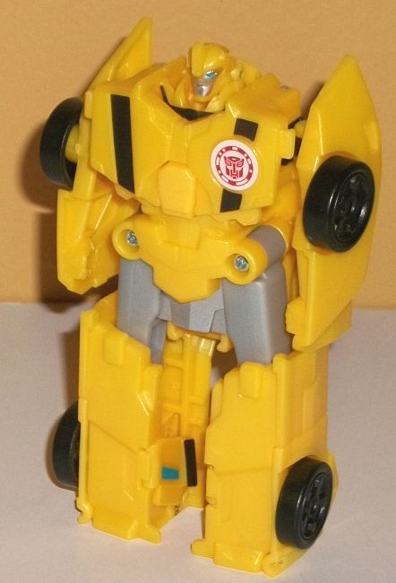
Difficulty of Transformation:
Very
Easy
Color Scheme
: Milky moderately dull
yellow and some light milky gray, silver, black, moderately light blue,
and forest green
Individual Rating
: 4.2
Bumblebee is represented
fairly accurately in his alt mode, at least when it comes to general proportions.
The one exception to this is that his front third or so is a bit more square
than usual, partially due to his transformation. At least in this mode,
it's not a huge issue-- the angular pieces on his front grill help make
this a bit less obvious-- but it is still noticeable. The middle section
looks great and yes, there is a port on the top of the roof for you to
plug in a Mini-Con Weaponizer or another toy with a similarly-sized port
up there to give 'Bee some weaponry in this mode. The side "fins" near
the back are slightly undersized, but only just so. The back end is the
weakest portion of this mode, as there's no real "back end" molded in there,
just the backside of the combiner head, and some chest bits that make him
have less clearance on the bottom than he should. When it comes to the
mold detailing, Bumblebee's a little more sparse than usual, even for a
RID2015 toy, but the essential details are still molded in, like the trio
of angular designs on each side of the top of his front hood; the "crumpled
up metal" on his front grill; some divots on the top of the back end; and
the wheel hubs. That said, missing some basic details like actual doors
is kind of an oversight. The color scheme is definitely overwhelming--
he's almost entirely a milky, fairly dull yellow in this mode, with little
of anything else. His wheels are black, and his front and side windows
(but not his back) are painted black, and some small hinge pieces near
the back end are black, as well. His headlights are also painted a fairly
light blue, but this isn't nearly enough. No stripes, no more details on
the front grill or roof... he really needs something else to break up all
that yellow plastic here.
Despite being about
twice as large, Bumblebee's transformation is about as complicated as the
simpler individual "Crash Combiner" toys-- fold the front grill pieces
behind his feet, spread out the front halves slightly, spread out the sides
of the back to become his arms, and then flip up up his head fron inside
the combiner head on the back end (it's unfortunately very easy to accidentally
have the whole combiner head come up, as it's spring-loaded). The end result
is a very chunky Bumblebee. His chest and waist are the biggest offenders,
being quite wide but without having something like a narrowed waist. His
headsculpt-- though well-done and accurate-- is also too small proprtionally,
so that doesn't help at all, either. The upper legs are in too wide of
a stance due to his wide waist, and his legs just end in stumps, not really
having any real feet-- heck, there's barely even kneecaps there. There's
barely any detail on his legs at all, they're mostly just rectangular blocks
with wheels on the sides. At least the chest and waist have some basic
(bloated) details, like some angular details on his waist and rather large
"pecs" that aren't at all show-accurate, though at least they have stripes
down them to break up at least a bit of 'Bee's yellow. Unfortunately, the
silver and blue on his face are the only other paint apps in this mode,
again making him far too bland, especially since the bland light milky
gray on the upper legs is the only new color introduced in this mode to
distract from all the yellow. Granted, there IS some silver paint in between
his legs and some forest green pointing out where his combiner port is,
but they stick out very uncomfortably between his legs and just... that
was a poor design decision, there. Finally, there's Bumblebee's arms, which
are very skinny from a frontal view (though they're significantly wider
from a side view, as they're the rear side sections of his vehicle mode).
There's just some small, basic arm and fist details molded onto the inside
of those pieces, and especially given how bulky his body is don't really
pass muster at all. The articulation in this mode is also extremely limited;
he can move side-to-side slightly at the knees and hips, and his arms can
move back-and-forth slightly at two different points on the shoulders,
but it's not much in either case. He's just barely more than a statue.
 Grimlock
Grimlock
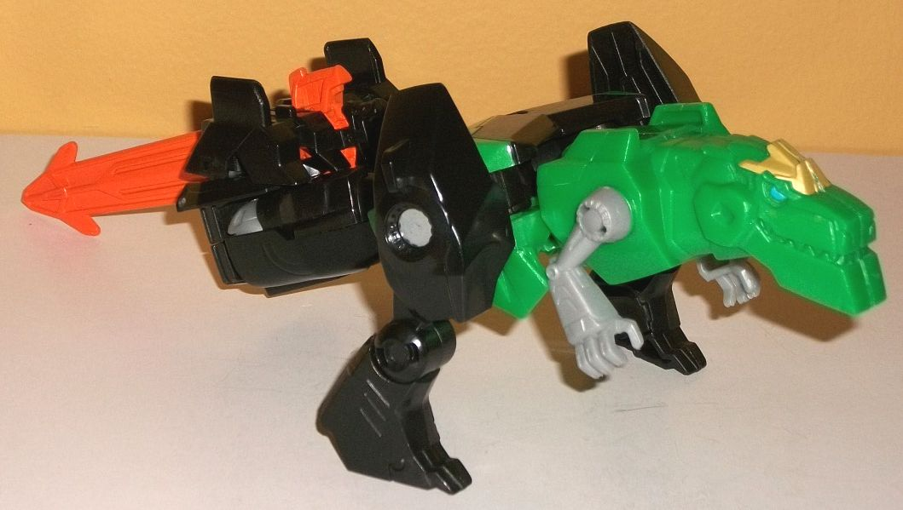
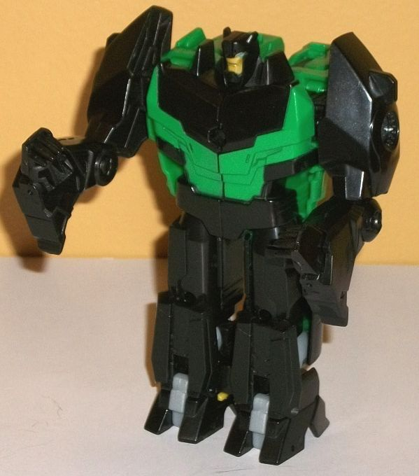
Difficulty of Transformation
: Easy
Color Scheme
: Black, moderately
light milky green, and some light milky gray, moderately light blue, milky
yellow, and dull mustard yellow
Individual Rating
: 3.4
Grimlock is, as you'd
expect, the biggest toy in the set, though if you think that makes him
the best-looking and the most complex, you'd be mistaken. In beast mode
the front half or so looks okay, but the back end is pretty obviously just
his robot mode chest and the robot legs angling down from between the dino
legs. It's all... pretty bad. The robot chest details and proportions are
RIGHT THERE on top of the back, along with the robot waist. Below the robot
waist, as the toy turns into his robot legs, there's at least somewhat
of an attempt to hide things-- the feet fold up on top of the lower legs,
thus making there only a small gap between his legs that needs to be covered
up. This can be MOSTLY done by sliding the set's sword accessory in between
Grimlock's robot legs back there, but it doesn't fit in all that snugly
and makes Grimlock's tail ridiculously long. The tail section is already
too long even without it-- due to the construction of the toy, where Grimlock's
robot feet are in his robot mode are where the waist is for the combined
Ultra Bee mode, so his feet can't actually separate! Instead there's just
a long bunch of connected pieces down there in this mode, with a combiner
connector at the end. It's all just a fairly undiscernible black-colored
mass. Thankfully, the front portion of this mode looks considerably better,
and Grimlock has all the molded-in details on the front end you'd expect,
like his grinning toothy mouth, his headcrest, his small multi-fingered
dino hands, and some basic angular details on the upper back. The legs
are also pretty accurate mold-wise, looking a bit long and angular around
the hips with some circular details around the pins that connect the hips
to the main body, and the lower legs have the dino claws and some divot-like
details molded in there. Unfortunately, although his basic milky green
& black color scheme is decent enough, Grimlock is desperately missing
some paint detailing on his front section-- his eyes are painted a fairly
light blue (which actually blends in with his green VERY well and is difficult
to pick out), his headcrest is a dull mustard yellow, and... that's it
as far as the beast mode-specific paint apps. (There's some green paint
on his back, but that's for the robot chest.) There's no paint at all on
the legs, on the rest of his face, and his arms are just a bland light
milky gray without any other paint. It all gives Grimlock a very unfinished
feel in this mode, not just in terms of his construction at the back end
but now with his color scheme, as well. For articulation in this mode,
Grimlock can move at each shoulder, at each hip, and at each knee (all
of it front-to-back motion). I wish his mouth could open, but other than
that it's pretty decent for the toy given it has three modes and still
has to be fairly simple. Grimlock does have a hole in the middle of his
back (robot chest) for you to plug in a Mini-Con Weaponizer or weapon with
a similar-sized port to give him some firepower in this mode.
To transform Grimlock
to robot mode, flip his robot feet down from the top of his tail piece,
split open the body and rotate up the robot head pieces, close it all up,
and then fold down the front half (the beastly parts) behind the upper
back. Voila, there's his robot mode. This mode is considerably better than
that awful beast mode. Even though much of the front half of the beast
mode is just tucked behind his back, it stays out of the way and doesn't
get in the way much-- it's a fairly minor issue, if you ask me. The chest
is a bit wide and flat and his head a bit small, though. The chest isn't
that huge of a deal, but pinhead Grimlock doesn't look so hot. That said,
at least he has his eyes painted blue and his face painted a dull mustard
yellow to bring out some of those details-- which is good, since beyond
that and some basic green details on his chest there's no other paint in
this mode. His robot hands are folded out of the lower t-rex legs, but
the angle at which they come out is a bit "off", and they don't look quite
right. This is emphasized by the fact he has spiky fingers but no apparent
thumb on each hand, and the t-rex feet hanging off the back of said hands.
(That said, minus the lack of paint, the rest of the arms look good.) The
legs are nice and bulky as you'd expect from Grimlock, though given the
toy's construction they merge near the bottom half or so, with the feet
just there for appearance's sake-- he can't move at his legs at all in
this mode. (He retains the shoulder and elbow movement in the arms from
his dino mode's legs, but otherwise has no articulation in this mode.)
As you'd expect, Grimlock has some basic angular details on his chest,
legs, and feet, and although it's undersized, the necessary mold details
on his head and shoulders are there and accurate. I just wish there was
some more paint in this mode...
 Sideswipe
Sideswipe
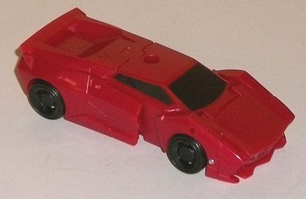
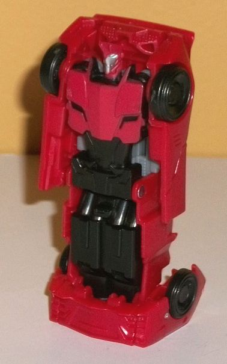
Difficulty of Transformation
: Very
Easy
Color Scheme
: Dark milky red, black,
and some silver, light milky gray, metallic charcoal black, milky yellow,
and moderately light blue
Individual Rating
: 2.5
Sideswipe's sportscar
mode is replicated pretty well in vehicle mode this time around, with the
only real issue being the inaccurate gap where there should be the front
of his car doors-- instead his car doors just kinda "stop" two-thirds of
the way, which is kinda weird, but I guess helps make his feet in robot
mode
slightly
less dorky by sizing them down a bit. All of the major
mold details on Sideswipe are here-- the angular details on his front grill,
the slight raised spoiler on the back end, the angular car doors with molded-in
"door handles", and little trios of divots on each side behind the car
doors. The back end is a bit broken up, though, as Sideswipe's spike-haired
head pokes out of there a little. Ignoring that, though, the details for
at least part of Sideswipe's taillights are still molded in there-- rather
impressive, given the scale. Almost all of Sideswipe is a dark milky red
in this mode, with little other coloration-- just black on the tires and
the front and side windows. He really could've used some more paint on
his front grill in particular-- he needed a bit more paint to break up
this up, regardless of size. There is, of course, a port in the middle
of Sideswipe's roof for you to stick in a Mini-Con Weaponizer or weapon
with the same-sized port into him to provide him with some weaponry in
this mode.
To transform Sideswipe
to robot mode, you just fold forward his front hood a bit, stand him up
on it, and then move the sides outwards slightly to form his arms. That's
it. It's pretty darned poor, with basically this entire mold just molded
onto the underside of the car mode. To be fair, his headsculpt is done
pretty well, with its usual "hair spike", blue on the eyes, and silver
on his face, and he's got his faux car front details on his chest painted
red. His stomach and abs have his usual angular details down there, though
unfortunately they're completely unpainted, and those details can get lost
pretty easily in all that black. The legs are just molded as one piece,
with some minor details on the kneecaps but otherwise they're not all that
impressive-looking, since those parts become one of the combined mode fists.
The arms are very 2-D looking, with just a hint of fists molded into the
bottoms, and they otherwise just obviously are the sides of his car mode.
His arms can only move VERY slightly side-to-side at the shoulders, but
that's it as far as articulation. The less said about his car hood "foot"
the better. Beyond the colors already mentioned, there's a bit of light
milky gray and milky yellow plastic on the toy, but it's mostly hidden
behind the upper body in this mode, and only is really revealed for the
interior of the arm mode, so it's not really visible in any mode.
 Strongarm
Strongarm
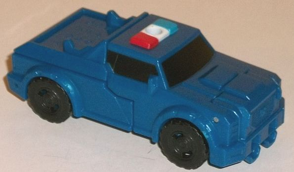
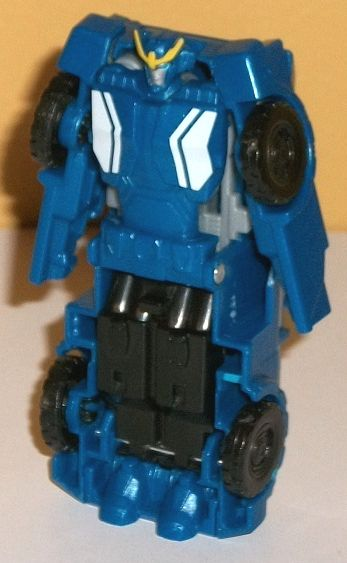
Difficulty of Transformation:
Very
Easy
Color Scheme
: Moderately dark milky
semi-metallic blue, black, white, red, moderately light blue, dull yellow,
light milky gray, milky yellow, and silver
Individual Rating
: 2.7
Strongarm's vehicle mode--
at least as far as the proportions go-- are pretty show-accurate, with
a tough-looking but fairly curvy vehicle mode. There's two minor extras;
the bottom of her feet below the front grill and the top of her head sticking
out the back end, but both of them are pretty minor overall, and are easily
overlooked. All of the mold details you'd expect to find in this mode are
here, such as her treaded tires, tough-looking front grill, light bar,
angular car doors, the section behind her top hood molded in with little
divots, and the like. The taillights and details on the back end are also
there, despite the head hanging down below all of it. Unfortunately, as
is usually the case with Strongarm, her color scheme is too complex to
fit RID2015's very limited paint budget, so her vehicle mode always tends
to be way too white or way too blue; and here, it's WAY too blue. A fairly
dark, milky semi-metallic blue is very close to the only color. There is
some black on her tires and painted on her front and side windows, and
her siren is painted white, red, and blue. That's IT for this mode, though--
no grill paint, nothing on the taillights or wheel hubs or headlights...
it all looks quite unfinished, which is unfortunate given how well they
nailed the vehicle mode in terms of proportions and mold detailing. There
is a port in the middle of Strongarm's siren for you to plug in a weapon
with a Mini-Con Weaponizer-sized peg to give her some firepower.
Strongarm's transformation
couldn't be simpler-- just stand her up on the front end of her vehicle
mode and then splay out the rear sides a bit to form her arms. Just like
Sideswipe in this set, her entire robot mode is molded onto the underside
of her vehicle mode. However, for Strongarm her somewhat bulky proportions
are instead stretched up a bit, so she's a bit overly tall and (relatively)
skinny compared to how she should look. Her major mold details are here,
but they're warped a bit-- the armored plating on her chest, the relatively
slim stomach, the "belt" on her waist, her rather curvy feet-- it's all
there, just not looking quite right. Her legs are one molded piece, with
the kneecaps having those little bits of armored plating molded on them,
but otherwise her legs are fairly barren, as they become the backside of
a fist for Ultra Bee mode. Her arms are, as you'd expect, way too skinny
and 2-D from a frontal view, and her fists molded in near the bottom are
too small proportionally. Her head is also too small, though at least the
sculpting on it is fairly show-accurate-- and she does have her signature
Prowl-like headcrest painted yellow, along with lighter blue eyes and a
silver face. She has some white angular designs on her chest, but otherwise
that's sadly it as far as paint in this mode. For articulation she's extremely
limited as well, only being able to move her arms very slightly from side-to-side
at each shoulder.
 Ultra
Bee (Combined Form)
Ultra
Bee (Combined Form)
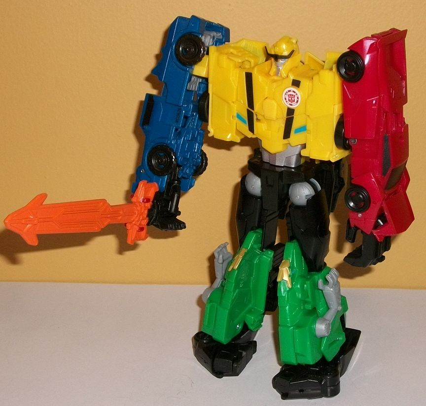
Difficulty of Transformation
: Medium
Individual Rating
: 7.6
C'mon, you knew it had to happen sometime-- a full-fledged combiner centered around Bumblebee. Unlike the other RID2015 Combiner Sets, since Ultra Bee has only 4 components, Grimlock forms BOTH legs and the waist, basically splitting in half. Meanwhile, predictably, Bumblebee forms the combined head and body while Strongarm and Sideswipe each form an arm. Of course, this leads to some scale issues, since Bumblebee should be about the same size as Strongarm and Sideswipe, but then again, when has scale mattered when it comes to Combiners? The arms are pretty standard fare for RID2015 combiners-- they're basically Strongarm and Sideswipe's vehicle modes, elongated slightly at the center and with the hoods popped so that the hands can fold out. There's no discernible elbows, and given that the only articulation Ultra Bee has is back-and-forth movement at the shoulders, movement at the base of each thumb, and side-to-side movement at each hip, he doesn't have any actual elbows anyways. Still, visible elbows, even if they DIDN'T move, would've been appreciated. The body looks pretty good, with the chest looking quite a lot like Bumblebee's normal main body, what with the faux "crumpled car hood" details and the silver abs. The sides of the body are really blocky, though, which doesn't look all that hot in comparison. The head is a nice combination of the various component robots, with Bumblebee's face, Strongarm's headcrest, some minor spikes on the top in a minor nod to Sideswipe, and some long chin guards that actually kinda look like the sides of Grimlock's dino jaw. The body also features the only new paint apps just for this mode-- black stripes on the chest and on the headcrest, silver on the face, and light blue on the eyes and on the faux chest headlights. It helps to break up the yellow some, but a bit more paint would've been appreciated there and on the arms. There's little bits of the sides of the car mode that stick out behind the back, but they're not large, and they have little slots in them that allow you to store Ultra Bee's weapon behind him when not in use, so I don't mind them. The upper legs look generally pretty good, being proportionally solid and round, while the bottom halves are pretty blantantly the halves of Grimlock's dino front with the dino arms just hanging out there rather obviously. Grimlock's robot feet also hang out behind the butt, but they don't add something obnoxious to the silhouette and aren't super floppy or anything, so they're not a big deal. The combined mode feet are made up of the dino legs curled up, so they look a bit odd shape-wise, but they do a pretty good job of keeping the combiner stable. (They can also rotate 360 degrees, though there's no real reason why you'd want to do that in this mode.) Finally, poor Drift is just relegated to the sword here, which is painted a bright orange with a black handle. There's a couple of minor details near the hilt that call back to Drift-- namely his signature headcrest in the center and what look like his large shoulder pads on the sides of the hilt-- but otherwise it's just a large orange sword. Overall the color schemes are a bit all-over-the-place and certainly call out distinct Autobots, but the black shared between all of them helps to tie them all together a bit regardless-- so overall Ultra Bee looks pretty decent in this mode.
Having Ultra Bee NOT
be the worst Combiner set of the three in Combiner Force is actually a
minor miracle, given how all of these designs were certainly NOT meant
to combine when they were originally created for the series. That said,
although Ultra Bee looks fairly cool for a simplified Combiner and it's
nice having an original (kinda) combiner, the individual robot modes for
all of them except Grimlock are pretty bad, and Grimlock makes up for it
by having a horrid beast mode. Using a slightly new way to combine-- and
not re-using two molds twice for the set-- upps my opinion of Ultra Bee
slightly, but it's still far below-par for someone expecting a toy set
that looks good in pretty much any mode beyond the gestalt configuration.
Nearly any other toy of these four released under the RID2015 banner is
better if you want toys of them individually.
Reviews by Beastbot